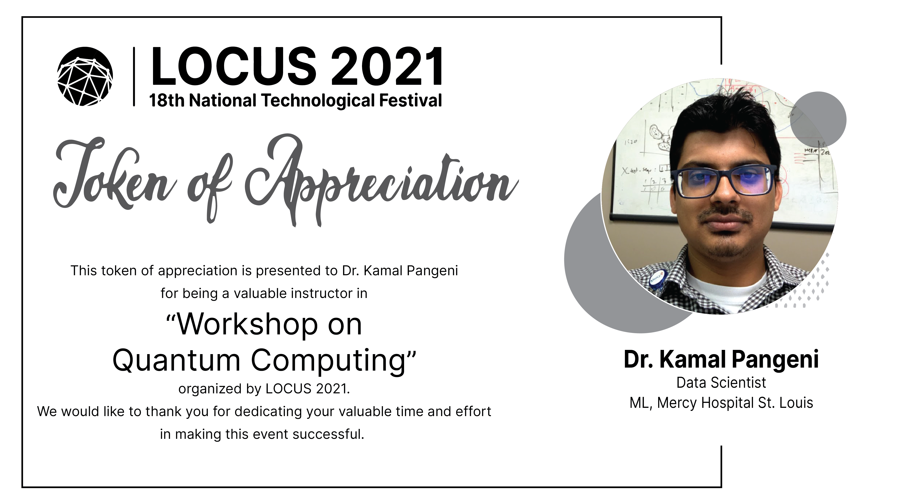

Kamal Pangeni, Ph.D.

My Interests (In Progress...)
My current interests are Machine Learning, NLP, Causal Inference, and Quantum Computing
Machine Learning
ML Certificates:ML Projects: Machine Learning Beginner Projects
Reinforcement Learning
REINFORCEMENT LEARNING SPECILIZATION CERTIFICATE HERE
RL Projects:
Cliff Walking with Reinforcement Learning
ConnectX with Q-learning
Quantum Computing
Projects:Quantum Teleportation with Qiskit

Causal Inference
Courses: Certificates:Adapted from the minimal theme by orderedlist.